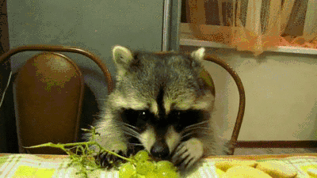

How to to keep stones happy
How to wiggle like a silkworm
How to eat a banana like a fruitbat
How to eat a grape like a raccoon

note: mouth open, big chews. then notice how the head tilts up and moves from left to right. no longer looking down at the food, but seeing through the appetite.